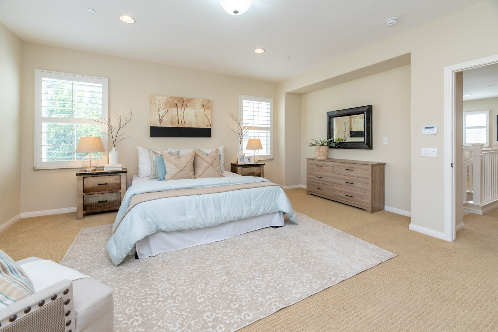
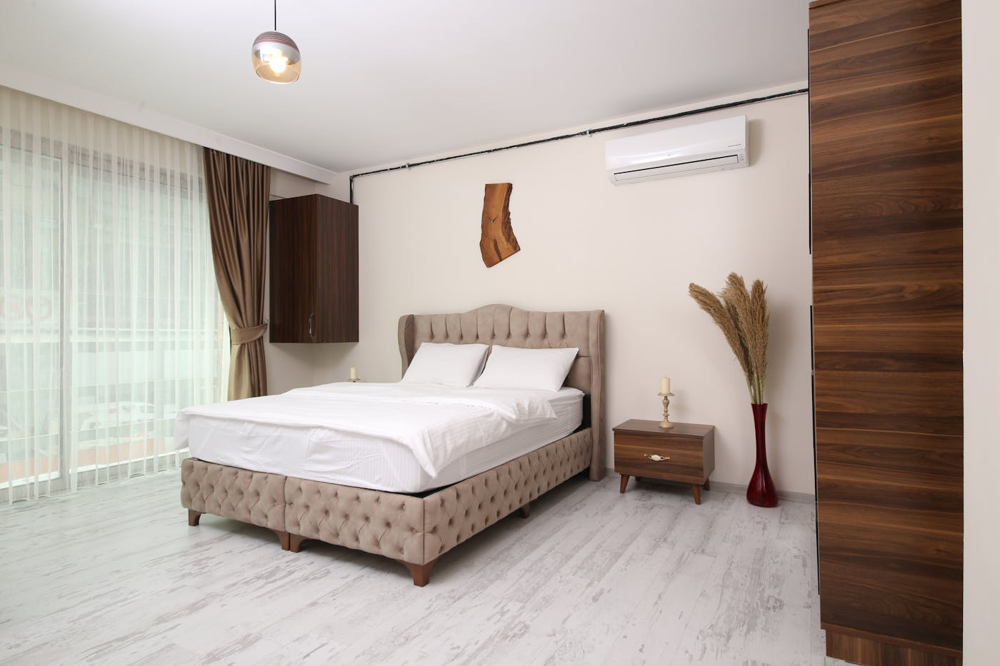

Ubytování
14 pokojů standard i komfort
Každý pokoj má vlastní koupelnu se sprchou nebo vanou a WC, televizi se satelitním příjmem a Wi-Fi připojení v celém penzionu. K dispozici jsou i pokojové trezory.

Standard
Dvoulůžkový pokoj
Útulný pokoj pro dva — ideální základna pro výlety po skalních městech.
- vlastní koupelna
- TV se satelitem
- Wi-Fi
- trezor

Standard
Třílůžkový pokoj
Prostorný pokoj pro rodinu či partu — s možností přistýlky.
- vlastní koupelna
- TV se satelitem
- Wi-Fi
- přistýlka

Komfort
Pokoj s terasou
Pokoje komfort s terasou a výhledem na krajinu Kladského pomezí.
- terasa s výhledem
- vlastní koupelna
- TV se satelitem
- Wi-Fi

Komfort
Apartmán
Zajímavé architektonické řešení a dostatek prostoru až pro 4 osoby.
- až 4 osoby
- vlastní koupelna
- TV se satelitem
- Wi-Fi
Kapacita až 33 lůžek — ubytujeme jednotlivce, rodiny i větší skupiny. Parkování na hotelovém parkovišti zdarma.